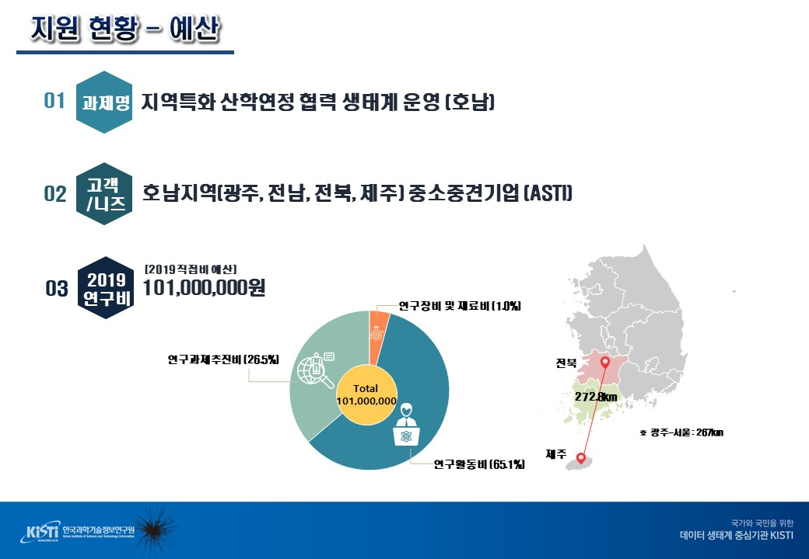
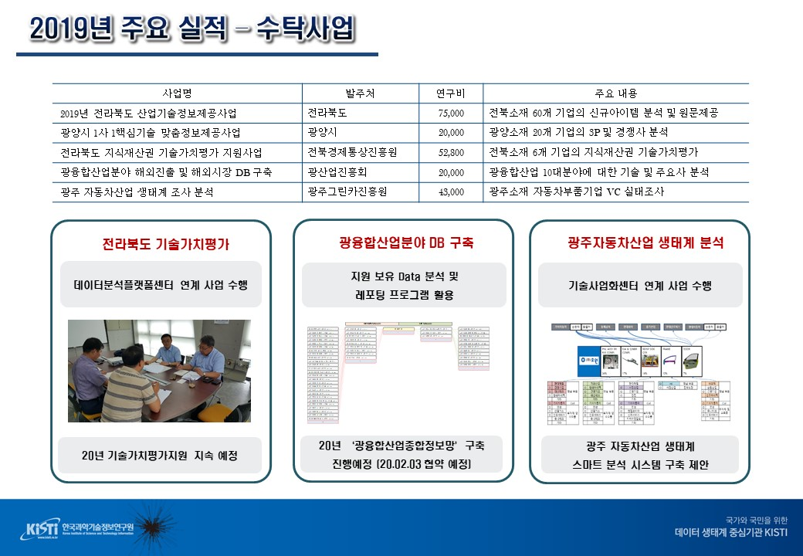
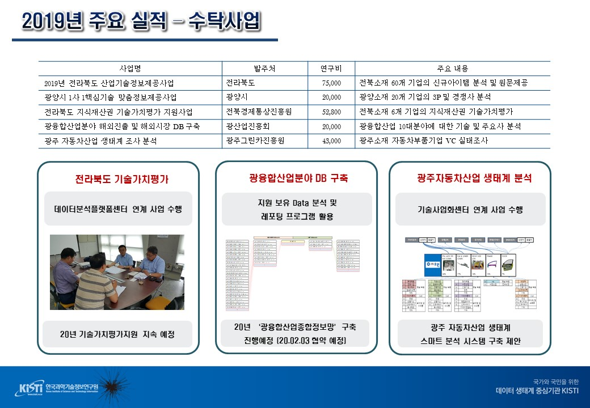
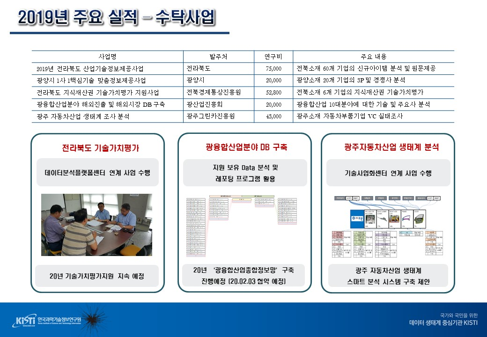
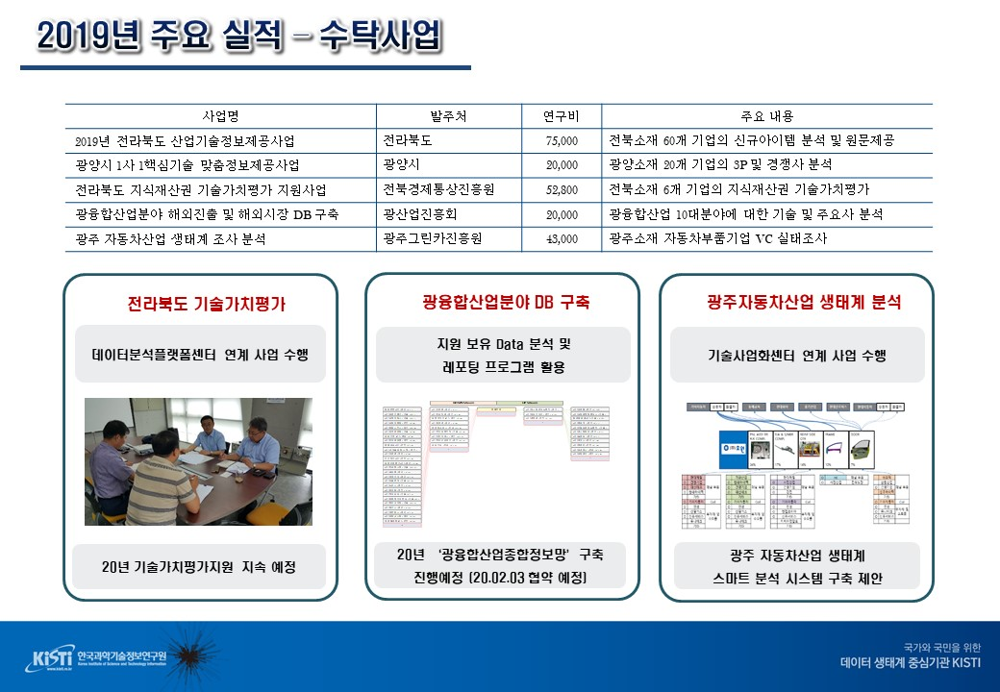
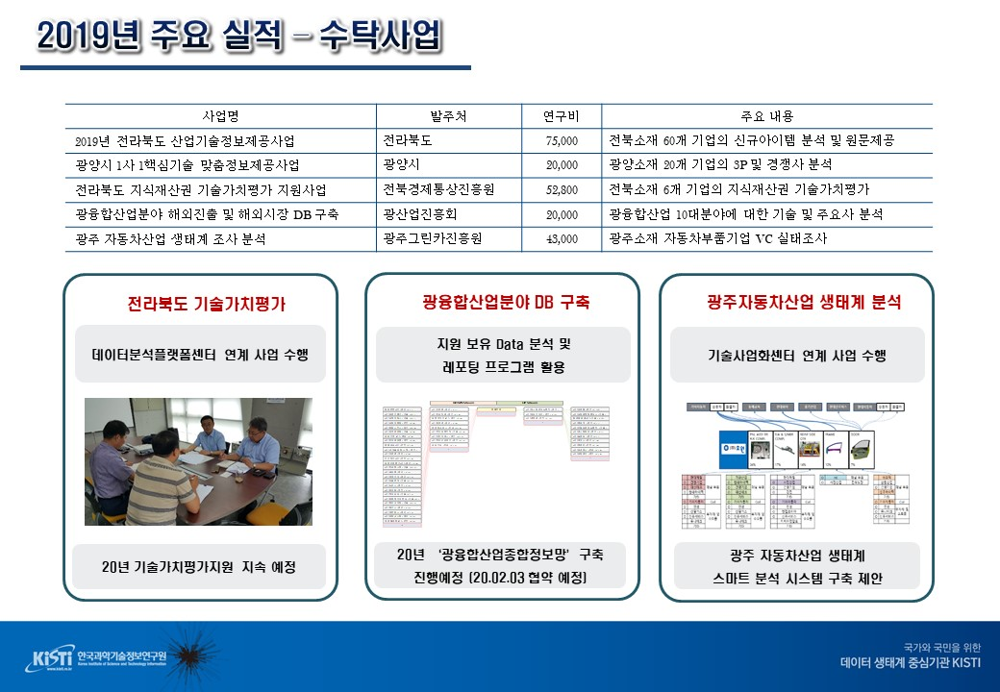

KISTI
www.kisti.re.kr
BEST KISTI, a leading organization to the data ecosystem for Korea and its people!
KISTI Introduction
KISTI Honam branch
KISTI Honam branch Information
Honam branch's the present status and issue


Please enable JavaScript to view the
comments powered by Disqus.

 


 
